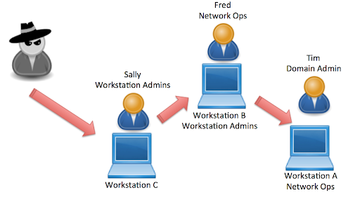
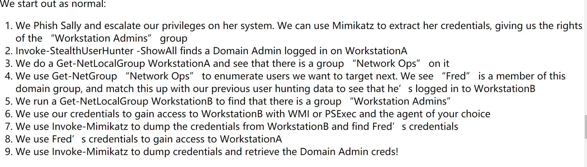

典型的域权限提升的过程围绕着收集纯文本凭据、或登录到拥有（或者能够获取）系统权限的机子上，获取用户凭据（Mimikatz提取内存凭证）
常常表现为查找域管理员登录的机子，通过横向，提权等手段获取该机子系统权限，然后转储域管理员凭证。
这个过程往往伴随着隐藏管理员账户和派生本地管理员的发现
域隐藏管理账户：
A是“技术管理”组的成员，”技术管理”组是“ DOMAIN ADMINS”组的成员，因此A是域管理员。
由于A并不直接在Domain Admins组中，所以当我们直接查询”Domain Admins“组成员时，并不会直接看到A。而是找到“技术管理”组，然后必须通过枚举”技术管理”组才能找到其成员A
Derivative Local Admins（派生本地管理员）：
在我的理解中，派生本地管理员是一种特殊的隐藏管理账户：
经典案例：（在这个例子中，Sally是WorkStation A中的派生本地管理员）

环境描述：
域组 “Network Ops”是”Wokstation A”的本地管理组的成员（而这里A恰恰是域管成员Tim登录的机子）
域组”Workstation Admins”是”Workstation B”的本地管理组的成员，Sally和Fred是域组”Workstation B”的成员
Fred同时又是域组”Network Ops”中的成员，Fred在 “Workstation B”上登录
Sally在 “Workstation C”上登录
通过获取 “Workstation C”的系统权限，提取Sally的凭证，借助这个凭证访问”Workstation B”，在”Workstation B”提取之后提取Fred凭证，借助Fred凭证获取”Workstation A”的管理员权限。
直接截取原文中的实际利用步骤：

则可以得出结论：能够获取到作为（域管登录机子）本地管理员组的成员的域组中成员凭据…的其他机子中的用户…即为该机子的派生管理员（手动断句，方便阅读）
那么我们简化一下上边的图，画出自己的理解图：

隐藏管理员账户可以通过上边例子中的方法手动查找，也可以使用Bloodhound更方便查找
使用Bloodhound查找隐藏账户的几种方法：
- Map Domain Trust
- 左键点击，直接在视图左侧查看节点信息；或者右键单击一个节点，然后选择子选项“ Expand”以查看该节点的成员
- 搜索“Domain Controller“ —-> Group Member（查找组）—->（左击其中的组）Local Admin Rights–>Derivative Local Admin Rights